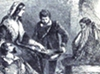

Collective Biographies of WomenAn Annotated Bibliography
Alison Booth
209.
Crosland, Mrs. Newton [Camilla]. Memorable Women: The Story of Their Lives...With Eight Illustrations by Birket Foster. Boston: Ticknor & Fields; London: David Bogue, 1854; 1856; 1857. London: Kent, 1858. New York: Putnam's, [1860s?]. London: n.p., [1860]. Rev. 4th ed., London: Griffin, Bohn, 1862. London: J. Blackwood, 1870.
Search OCLC WorldCat for this title.
Search Google Books for this title.
Crosland, Mrs. Newton [Camilla]. Memorable Women: The Story of Their Lives...With Eight Illustrations by Birket Foster. Boston: Ticknor & Fields; London: David Bogue, 1854; 1856; 1857. London: Kent, 1858. New York: Putnam's, [1860s?]. London: n.p., [1860]. Rev. 4th ed., London: Griffin, Bohn, 1862. London: J. Blackwood, 1870.
TOC: Rachel Wriothesley, Lady Russell; Madame D'Arblay and Mrs. Piozzi; Mary L. Ware; Mrs. Hutchinson and Lady Fanshawe; Margaret Fuller, Marchesa Ossoli; Lady Sale.
Bodleian Author of a biography of Mrs. Blake (1862), Partners for Life (1847), Stories of the City of London, Retold for Youthful Readers (1880), etc.
See also Pop Chart-
Lady Fanshaw
-
 Lady Rachel Russell
Lady Rachel Russell -
 Mrs. Thrale
Mrs. Thrale -
 Fanny Burney visiting Dr. Johnson
Fanny Burney visiting Dr. Johnson -
 Mary L. Ware
Mary L. Ware -
Mrs. Hutchinson
-
 The death of Margaret Fuller Ossoll
The death of Margaret Fuller Ossoll -
 Meeting of Sir Rovert and Lady Sale
Meeting of Sir Rovert and Lady Sale
Search OCLC WorldCat for this title.
Search Google Books for this title.